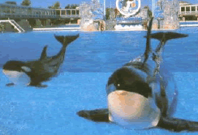

UNA LUNA DI MIELE
|
|
|
Per rendere il vostro viaggio di nozze ancora più entusiasmante potete abbinare un soggiorno negli Stati Uniti prima delle crociere transatlantiche della Costa Vittoria e Costa Atlantica. |
|
|  |
soggiorno a |
Tre giorni di divertimenti alla grande.Perche Orlando significa Diney Word, Sea World, Epcot,MGM e Universal Studios Arriverete a Orlando con un volo di linea via New York, e verrete accompagnati al vostro hotel.Da quel momento non dovrete far altro che pensare a divertirvi, scegliendo, fra le innumerevoli fantastiche proposte che vi interesseranno di più: Topolino, Minnie e tutta la compagnia, i sallti delle orche, la supertecnologia e... tutto il resto! Al termine del soggiorno, trasferimento a Fort Lauderdale per iniziare la crociera. |
|
Il vostro Hotel a Orlando |
|
Hotel Hyatt Orlando (o similare) |
Servizi:a disposizione 3 ristoranti(cucina italiana e internazionale), bar, 4
piscine riscaldate, piscina per bambini, palestra, percorso da jogging, minigolf
e negozi, parrucheria e autonoleggio. A pagamento servizio navetta per i parchi. |
PARTENZE DALL'ITALIA |